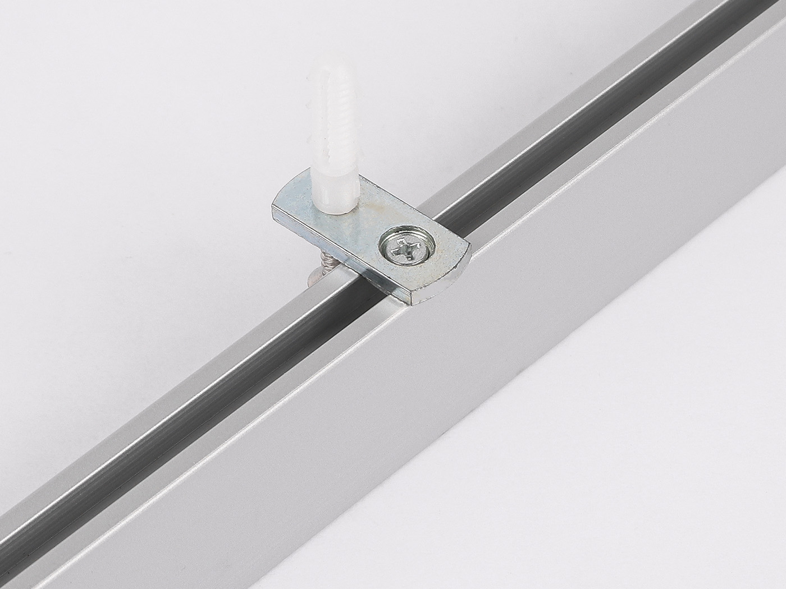

Type 01
Direct Ceiling Mount System
Track is fixed directly against the ceiling for a flush installation. Single-track and double-track top mounting clip options can be matched by layout.
- Best for flat ceilings and clean low-profile installation
- Uses top mounting clips, runners, end caps, and connectors
- Suitable for treatment rooms, clinics, and room divider routes